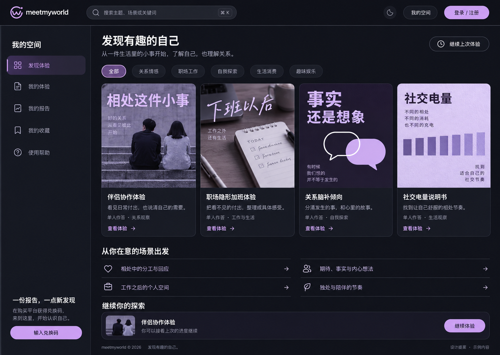
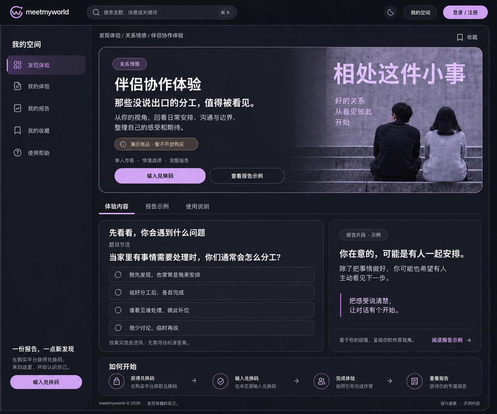
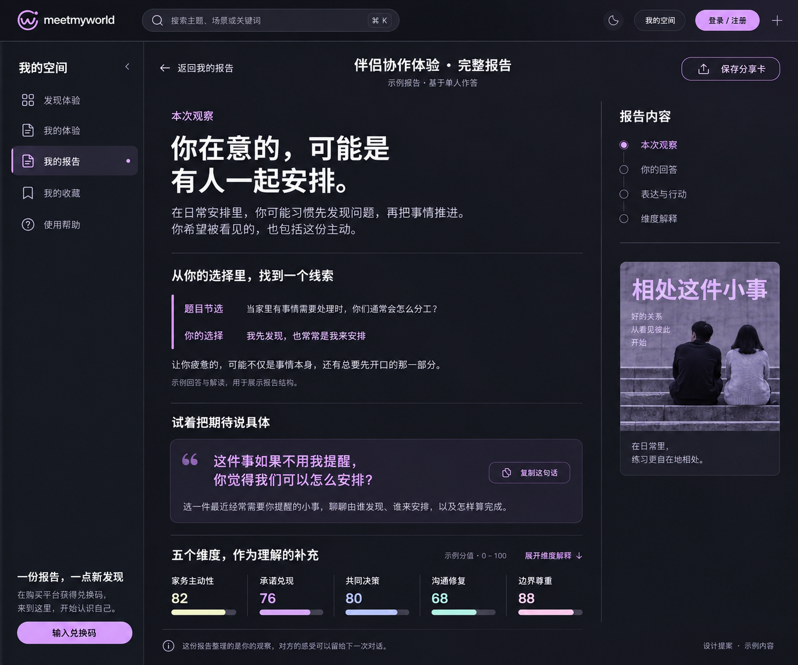
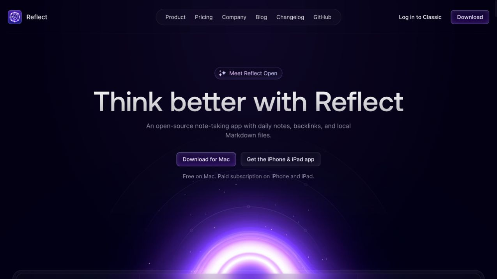
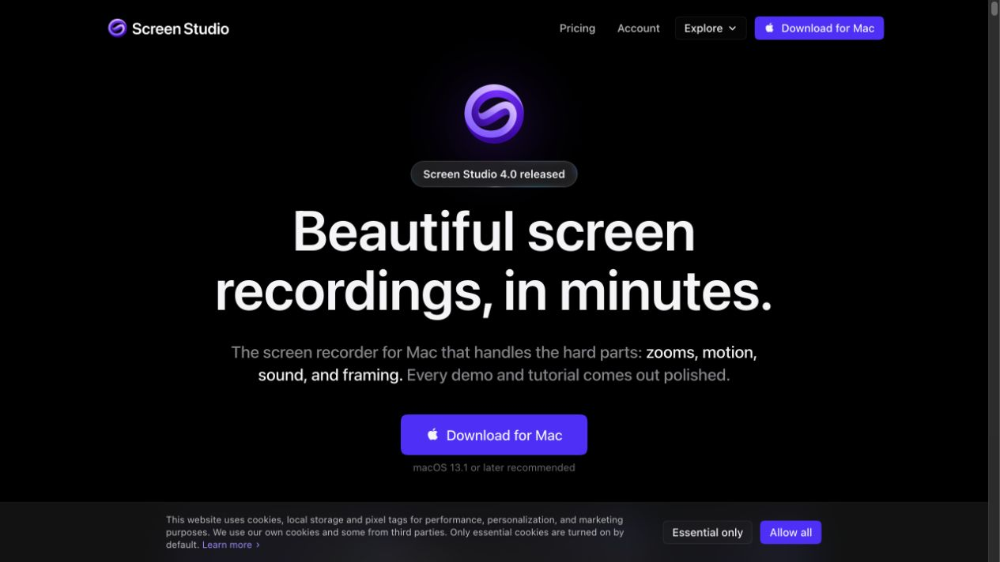
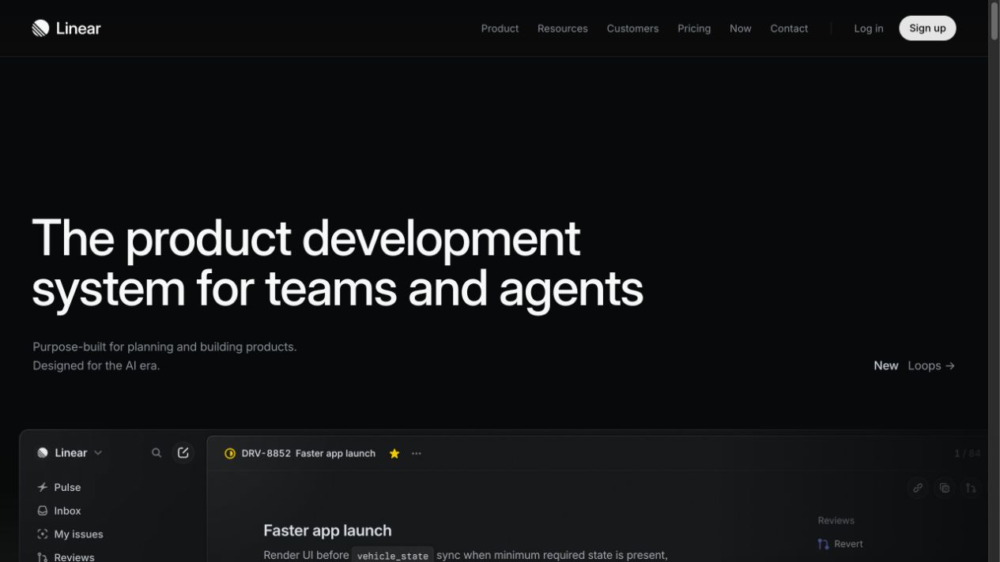

深色界面 · 紫色品牌
保留熟悉的色彩，重新梳理内容与留白。
保留目前的顶部搜索、左侧导航、灰黑背景和浅紫按钮，调整商品卡片、内容层级与报告阅读。以下是三张改进概念图和一个可操作的答题片段。



参考来源与采用的细节
采用紫色网站的色彩控制与暗色界面的排版方法。截图用于对照研究，点击名称可查看来源。

黑紫背景与紫色按钮形成层次。借鉴局部强调与颜色占比，装饰光球不纳入本次方案。

高对比标题与紫色主按钮让操作一眼可见。借鉴明确的字号层级与主次关系。

当前官网接近黑白，作为辅助参考：借鉴暗色表面层级、细边框与紧凑排版。
答题状态与动效
选中一项，再点「下一步」，体验明确的选择反馈和克制的页面过渡。使用 Tab 可以移动焦点，方向键可以切换选项。
- 选择反馈 · 160 ms
- 边框与底色过渡，选中时出现勾选标记。
- 下一步 · 220 ms
- 新内容淡入，向上移动 8 px 后停稳。
这些时长是本项目的动效提议。系统开启「减少动态效果」时，反馈与切换立即完成。
交互演示不保存答案
已记录这次选择
这是模拟反馈，你的选择仅显示在本次演示中。
独立 HTML / CSS 交互样例 · 题目与选项取自现有预览内容 · 刷新页面即清空